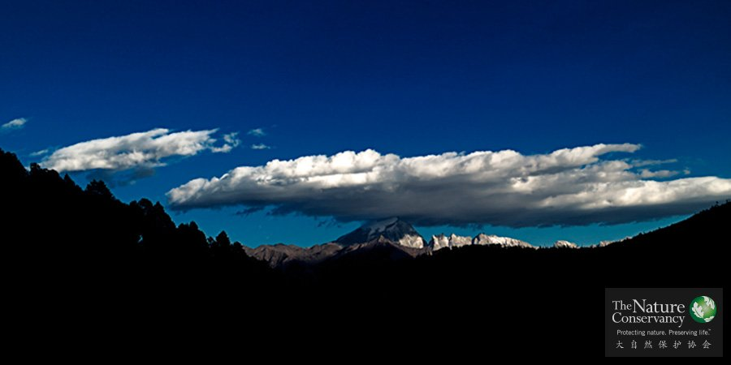

中国生物多样性保护远景规划项目

滇西北®TNC
从2006年开始，TNC与国家环保部合作开展了“中国生物多样性保护远景规划项目”。该项目运用TNC开发的“自然保护系统工程”（Conservation by Design，CbD）为工具，对中国的生物多样性保护状况及其所面临的威胁进行评估，识别了中国生物多样性保护优先区域，并协助中国政府制定相应的保护策略及行动，为未来的保护决策提供了科学依据。
项目用3年时间(2006年-2008年)，分别在长江上游流域、四川省以及全国范围内，以生态区域评估的方法为基础，对区域内的生物多样性进行了综合评估，识别出需要优先重点保护的区域，同时，对参与项目的合作伙伴进行规划方法的培训，并对“生态区域评估”（Eco-regional Assessment，ERA）的方法加以改进和完善，使之更适用于中国国情。
成果
数据库和地图
初步建立了覆盖全国的生物多样性空间数据库和一系列反映生物多样性保护现状以及优先保护区域的地图集，为协助中国政府履行《生物多样性公约》，制定保护与发展策略，提供了及时、动态和详实的科学信息；
《中国生物多样性保护优先区域识别及空缺分析》
完成了《中国生物多样性保护优先区域识别及空缺分析》专题报告。在全国范围内共划分出32个陆地保护优先区域，总面积约占国土面积的24%。该成果提交环保部生态司，为完善现有的《中国生物多样性保护战略与行动计划》（2011-2030）奠定了科学基础，2010年国务院正式发布《战略行动计划》；
长江上游流域
完成了《长江上游流域的陆地和淡水生态区评估报告》。以长江上游流域为试点，对生态区评估的方法在中国进行了实验，为将该方法应用于中国其他地区提供了重要的参考经验，并与长江水利委员会合作建立了联合实验室，为《长江流域总体规划》的修编提供方法、技术及信息等方面的支持；
四川省生物多样性保护
与四川省相关部门合作完成了《四川省生物多样性保护战略与行动计划》（2011-2020），为四川省制定保护与发展规划提供决策支持，2011年四川省政府正式发布该成果；

有科学家预测，如果按现在每小时3个物种灭绝的速度，40多年后的2050年，地球上四分之一到一半的物种将会灭绝或濒临灭绝。根据计算机模拟，这一速度比生物自然灭绝的速度快1000倍，比物种形成的速度快100万倍。
中国是一个生物多样性大国，有着丰富的野生动植物资源。为展示我国自然保护工作的成果，宣传人与自然和谐共存的美好愿望，体现2008北京“绿色奥运、科技奥运、人文奥运”的奥运精神，国家林业局、第29届奥林匹克运动会组织委员会、大自然保护协会(TNC)共同主办“自然中国，和谐家园——我眼中的自然保护区”摄影大赛。

这里有你尚未看到的中国，如此神奇而美丽。然而，很多野生动物面临威胁。中国拥有世界上最多的自然保护区，我们有责任把宝贵的自然资源留给后代。今天，我们与亿万种生命和谐共存，明天，我们仍将分享美好自然。“自然中国”摄影大赛的精美作品，除了展现最动人心魄的自然之美，还带给我们许多关于自然保护的思索。

张小全博士，1999年毕业于中国林业科学研究院，获生态学博士学位。2009年5月加入大自然保护协会（TNC）中国部，先后担任气候变化高级科学家、科学与政策中心主任、副首席代表。领衔编制了中国首次向联合国提交的土地利用变化和林业温室气体清单；起草了全球第一个被CDM执行理事会批准的“CDM退化土地再造林方法学”和第六个被批准的方法学“以灌木为辅助的CDM退化土地造林再造林方法学”。领衔开发了全球首个CDM造林再造林项目“广西珠江流域治理再造林项目”，全球首个气候、社区和生物多样样金牌认证造林项目，以及多个在中国和印度开展的CDM造林再造林项目。领衔开发了中国自愿减排方法学“竹子造林碳汇项目方法学”、“森林经营碳汇项目方法学”和“小规模非煤矿区生态修复方法学”。领衔开发了多个CCER造林和森林经营碳汇项目。参与核证碳标准（VCS）农业、林业和其它土地利用（AFOLU）碳标准的起草。曾任IPCC温室气体清单数据库编辑委员会委员（2003-2005）。在国内外重要学术刊物发表学术论文一百多篇，主编出版专著6部。